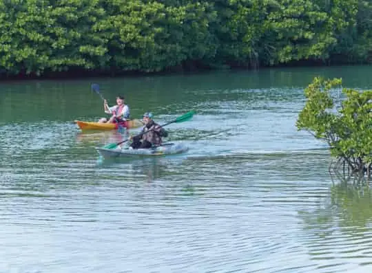
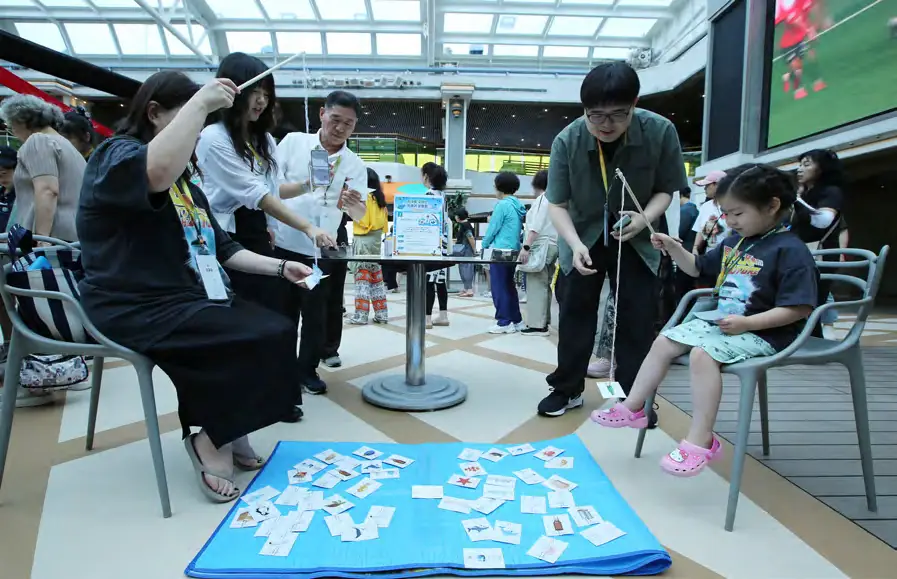
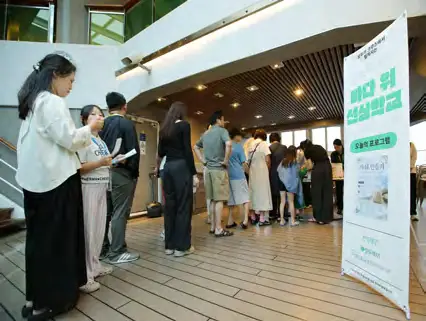
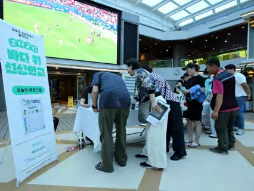
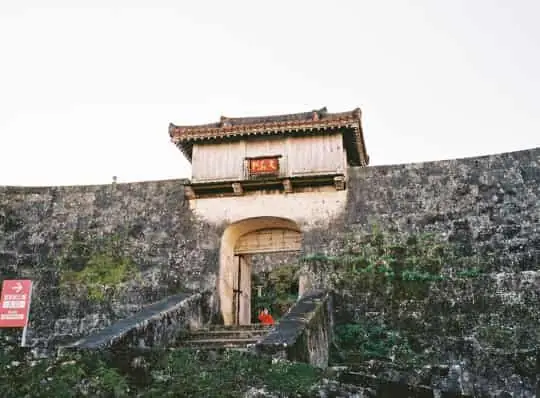
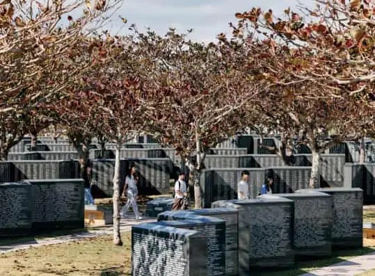
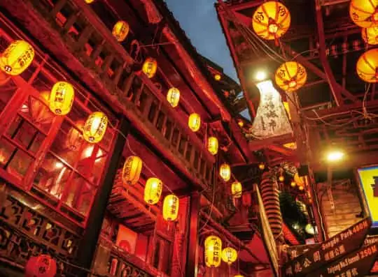

01 · ENVIRONMENT
환경
대만 예류지질공원과 양명산, 오키나와 만좌모와 부세나 해중공원을 찾아 천혜의 자연과 마주했습니다.
지구를 생각하는 특별한 항해.
2005년부터 17,213명의 그린리더가 함께 바다를 건넜습니다.
그린보트는 *세계 유일의 환경 테마 크루즈*입니다. 바다 위에서 함께 배우고, 기항지에서 직접 보며, *지구와 공존하는 방법*을 찾습니다.
한국의 환경재단과 일본의 피스보트가 2005년부터 함께 운영한 크루즈 프로그램입니다. 한일 양국 참가자가 한 배에 올라 아시아 곳곳을 여행하며, 아시아의 화합을 가로막는 환경·역사·사회·문화 문제를 열린 시각으로 바라보고 대안을 찾았습니다.
기후 변화, 플라스틱 쓰레기, 미세먼지 등 환경 문제를 탐구하고 평화와 인권, 역사 문제까지 고민해 온 환경 연수 여행입니다. 선내에서는 명사들의 강연과 공연, 워크숍이 열리고, 기항지에서는 환경·역사·평화·문화의 현장을 직접 탐방합니다.
여행에 환경교육을 더해 지속가능한 여행문화를 만들다

그린보트가 전문여행사와의 협업으로 ‘바다 위 선상학교’로 새롭게 운영되었습니다.
환경교육의 대중성을 높이고 더 많은 시민에게 참여 기회를 제공하고자, 환경·AI·인문학·건강 강연과 캠페인, 체험, 문화공연을 여행에 더했습니다. 특히 강연이 환경 인식 변화에 가장 큰 영향을 준 콘텐츠로 평가되며, 지식과 체험, 환경교육을 결합한 지속가능한 여행 모델의 가능성을 확인했습니다.
선내 강연 29회 · 체험형 프로그램 40회 · 문화공연 12회


매일 발행되는 선내신문으로 다음 날 프로그램을 확인하고, 관심 있는 강연과 활동에 자유롭게 참여합니다. 제15회 그린보트(2025)의 프로그램입니다.

대만 예류지질공원과 양명산, 오키나와 만좌모와 부세나 해중공원을 찾아 천혜의 자연과 마주했습니다.

대만 국립고궁박물원, 류큐 왕국의 슈리성, 조선 도공의 숨결이 남은 아리타를 따라 과거의 발자취를 걸었습니다.

오키나와 평화기념공원과 히메유리탑, 나가사키 평화공원에서 전쟁의 상흔과 평화의 의미를 되새겼습니다.

대만 지우펀의 홍등 거리, 오키나와 전통 가옥과 공예, 사세보 하우스텐보스에서 현지의 전통과 오늘을 만났습니다.
“크루즈는 탄소를 많이 내지 않나요?” 그린보트는 단순한 관광이 아닙니다. 2천여 명이 함께 숙식하며 강연을 듣고 기항지를 탐방하는, 움직이는 학교입니다.
승객 1인이 1km를 이동할 때 배출하는 CO₂ 기준입니다.
단위: 승객 1인당 km당 CO₂ 배출량(gCO₂/pax-km) · *코스타 퍼시피카호는 코스타 세레나호와 쌍둥이 배
제15회 그린보트 참가자 설문 · 5점 척도 평균 (사전 427명, 사후 389명 응답)
2025년 제15회 그린보트 기준
그린보트 매거진 VOL.3(2025)에 실린 이야기입니다.